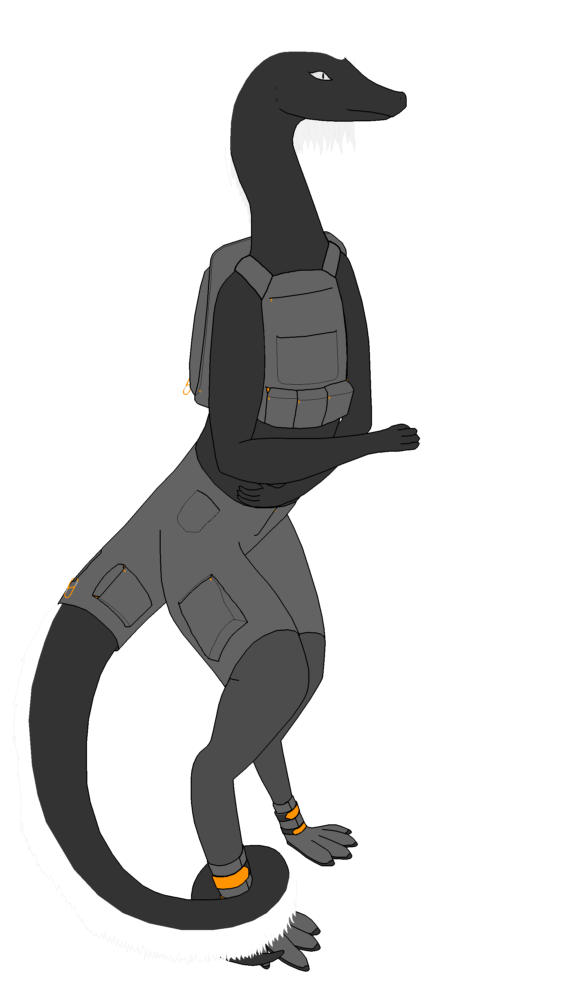
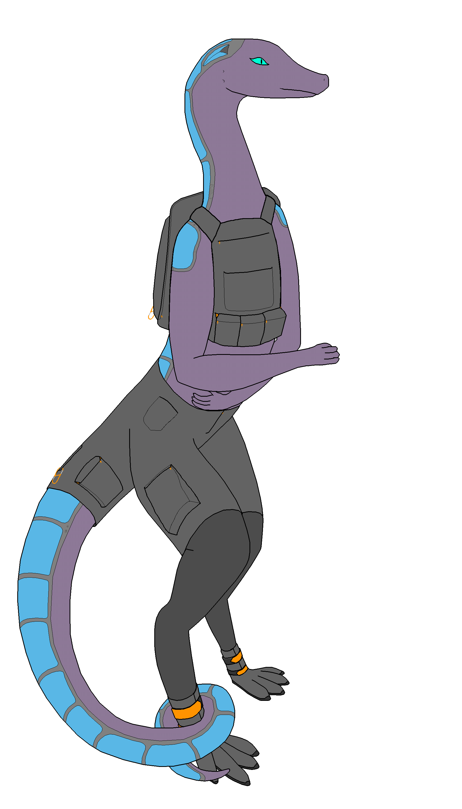
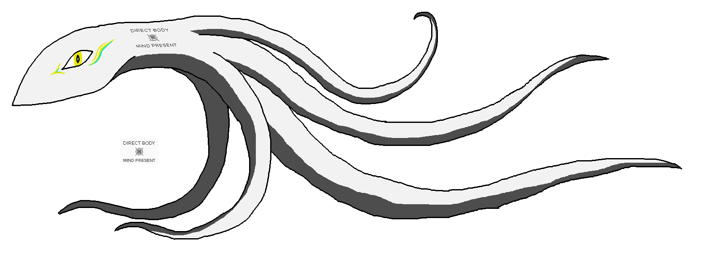

- Patricia, the founder of the family. She had been a transhumanist for a long time before the decision to digitize her mind. After the split, she kept working on some of her projects mainly involving bodily modification.
- Felicity, a digital transhuman hyperfocussed on technological independence and full understanding of her own critical infrastructure. She is fundamentally just a digital emulation of Patricia's brain with minor additions, and also exists in a convergency with 16 copies of herself.
- Serendipity, a posthuman digital superintellect made of 65 individual minds meshed together into one coherent whole, vastly more mentally capable than either Patricia or Felicity but not so advanced as to become completely unrelatable.
Patricia


Much later, she decided on undergoing an extensive process to precisely measure and model her nervous system with machine learning, creating a computer simulation of herself, which came to be known as Felicity, thus creating the Whateverweaver divergency.
After the split, she kept some of her personal project and gave up some others so that Felicity would have something to live for too, and went on doing mostly the same things as she usually did. Her freely released body project over time gained a personally huge following (though still insignificant at the grand scale of the solar system) and allowed her to benefit from some community-made developments, as well as a small constant inflow of donations.
Felicity

Felicity is a complete software emulation of Patricia's brain and nervous system, made through a crude but easy to understand process that left her knowing how she works better than she ever could as a biological being. Her mind is a massively computationally demanding system that in spite of advanced hardware used, requires whole dedicated buildings much like ancient supercomputers to run, and she must resort to remote bodies when she wishes to interact with people outside of virtual spaces.
Due to the exact structure of her mind, it is possible for her to exist as multiple copies simultaineously and synchronize memories later. She normally exists in a convergency with up to 16 copies of herself, witnessing and remembering events from multiple perspectives, and experiencing herself from the first, second and third person perspectives.
Her main occupation is asteroid mining, where she employs industrial processes she mostly put together with her own research, to extract all the materials needed to produce her own hardware, forming circular supply chains that she is fully in control of. Some of the material and hardware is sold occasionally for extra income or just to support nearby settlements. Every single blueprint and industrial procedure she needs to maintain herself independent from supply chains outside of her control is passionately detailed in a massively overgrown hypertext sometimes referred to as the "Felicity tech tree".
Serendipity
